A cross-curricular elective blending media literacy, digital literacy, ESL, history, digital wellness, and content creation
Broadcasting & Media Literacy was developed for multilingual learners at Mary Lyon Pilot High School and offered district-wide through Campus Without Walls. This portfolio documents the course's nine-unit design, standards alignment, origin story, student work, studio setup, and outcomes. Everything is organized in the Course Data Terminal below: click any drive bay to open it. Use the nav above to jump between sections.
This course came out of teaching tech and noticing two things: real gaps in basic digital literacy, and student obsession with content, TikTok, news, YouTube, the way stories get spun and spread. Kids who couldn't identify a credible source were producing their own media every day and didn't know it.
The 250th anniversary of the American Revolution gave us a through-line. We looked at how people communicated, organized, and spread propaganda in 1775 (pamphlets, town criers, political cartoons) and put that next to what's happening now in a hyper-partisan media environment. Same dynamics, different platforms. Then we pivoted: students stopped analyzing other people's content and started making their own. Influencer-style makeup tutorials. YouTube videos about their favorite animes. Commercials. Podcasts published on Spotify. T-shirts, mugs, and stickers off the heat press. Coding apps and websites for actual school use. Videography. Gaming content. Whatever students had a personal stake in producing.
Because the content was real and the audience was real, the standards followed naturally. MA DLCS, ELA, Civic History, ESL/ELD, WIDA, ISTE, and CASEL all showed up, because you can't make a podcast about immigration policy without reading, writing, arguing, researching, and knowing your audience. The course was co-taught with ESL colleagues from the start, with bilingual scaffolds and WIDA supports built into every unit.
Course Documents & Resources
Course Foundation
Standards & Curriculum Design
Unit Materials & Student Work

Mary Lyon Podcast Studio — students producing original audio content, SY 2024–2025
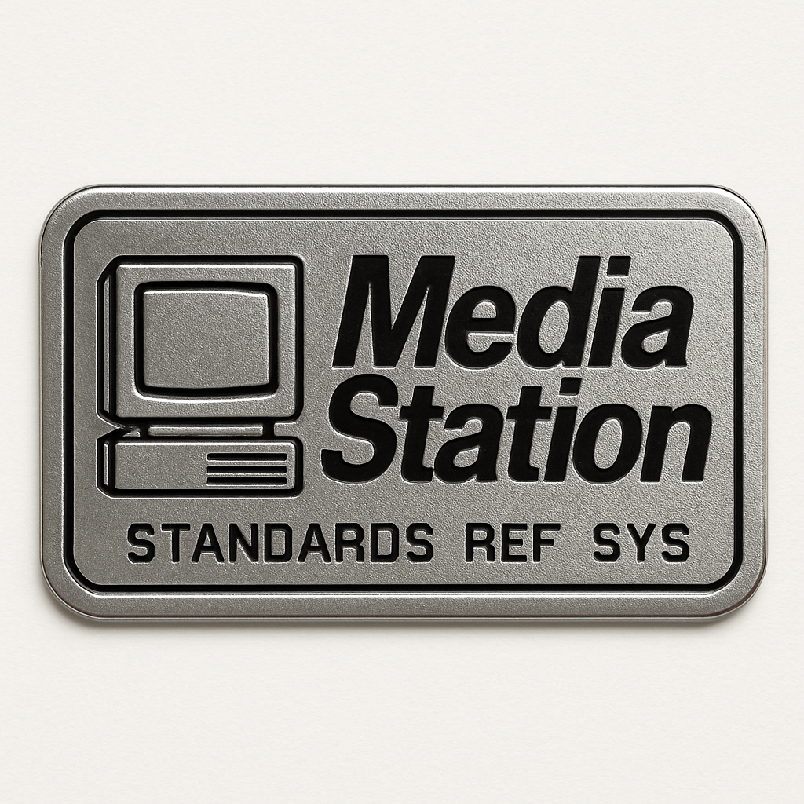
- Course Overview
- Origin Story
- Nine Units
- Student Work
- MA DLCS
- WIDA ELD
- MA ELA / HSS
- ISTE
- CASEL / SEL
- Game Lab
- Media Studio
- How It Went
- What's Missing
- France Trip
- Course Docs
- Photo Gallery
- Student Work
- Studio Shots
DL-01-OVERVIEW.DAT · What This Course Is · Five Disciplines
Broadcasting & Media Literacy is a production course built on a rigorous conceptual foundation. The first half of the year is explicitly preparatory: students build academic language, master core media concepts — ethos, pathos, logos, bias, persuasion, analog vs. digital media forms — and develop the critical vocabulary needed to function as producers, not just audiences. That foundation is not the destination. It is the runway. In the second half, students pivot fully into content creation: running a live school newsroom with professional role rotations (anchor, editor, researcher, social media manager), recording and publishing original audio on Spotify, producing video for YouTube, and working in a fully built media makerspace equipped with a Cricut vinyl cutter, Cricut Mug Maker, sublimation heat press, and HTV shirt press. Students designed and made branded merchandise, stickers, mugs, and t-shirts as production artifacts — not crafts. The course ran at Mary Lyon and was available BPS-wide through Campus Without Walls.
The course grew from conversations with students. Surveys during the Mary Lyon Podcasting Club pilot shaped the scope and sequence. Students named what they wanted to learn. The curriculum followed. That student input is why the course held engagement from a population that can be hard to keep in an elective.
What the Foundation Builds — Five Disciplines
Bias, persuasion, ethos/pathos/logos, SIFT method, misinformation/disinformation analysis, source evaluation across platforms
Computing & Society and Digital Tools & Collaboration standards: digital citizenship, online safety, tool selection, artifact creation, and source citation
Social media and mental health, body image, screen time, digital boundaries. Drawn directly from BPS Office of Health & Wellness curriculum and integrated into Unit 4.
American Revolution, protest movements, BLM. Students compared propaganda and persuasion across centuries using Boston as the classroom: Tea Party Museum, Old South Meeting House, Kennedy Institute.
After a semester of foundation-building, students become producers. The newsroom ran with full professional role rotations: anchor, editor, researcher, social media manager. The podcast published on Spotify. Video went to YouTube. The makerspace — Cricut vinyl cutter, Cricut Mug Maker, sublimation press, HTV shirt press — gave students a physical production channel alongside digital. Students designed and made branded merchandise as production artifacts. Analog and digital media creation happened in the same room.
DL-02-ORIGIN.DAT · How This Course Came to Exist · 2019–2026
Most students arrived with no computer experience outside of MAP and ACCESS testing. Digital literacy was embedded in ESL instruction as a baseline. That gap shaped every instructional choice that followed.
Led professional development at multiple schools on using technology to reduce teacher workload and improve instruction. Focus was adoption and trust-building, not tool demonstration.
Joined the Educational Board of Revolutionary Spaces and helped co-create the Revolution Is Brewing interactive civic media activity at the Old State House. Six years later, that same activity became the anchor field trip for Unit 3 of this course.
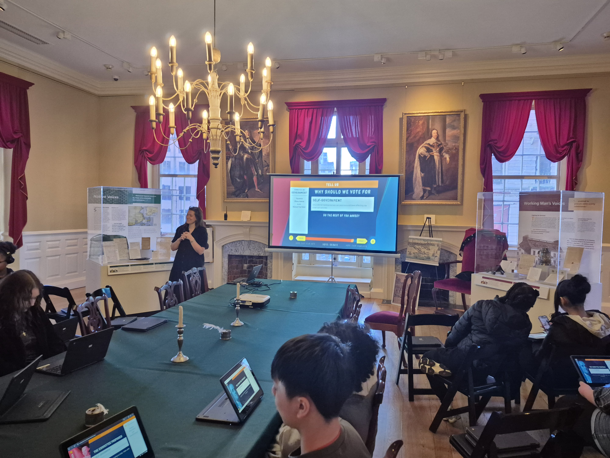
Built an extracurricular podcasting program where students learned audio production, equipment setup, and digital storytelling. Strong enough engagement that the principal asked to formalize it as an elective. View Podcast Club materials ↗
Student surveys shaped the scope and sequence. The course ran at Mary Lyon and was offered BPS-wide through Campus Without Walls. The UbD Curriculum Design Proposal and scope and sequence are in Course Documents below.
DL-03-UNITS.DAT · Full Year Curriculum Map Essential Questions ↗
What is Media Literacy?
Bias, audience, persuasion, ad analysis, ethos/pathos/logos — foundation for the year · Field trip: Boston Public Library (Copley)
Reality Check — Media vs. Truth
Fact-checking, source evaluation, misinformation vs. disinformation · Major project: student podcast "One Story, Two Realities"
American Revolutions — Then & Now
Revolutionary Boston, protest media, propaganda — BLM vs. Boston Tea Party comparison · Field trips: Old South Meeting House, Boston Tea Party Ships & Museum
Digital Health & Body Image
Social media, mental health, digital wellness, screen time · Project: PSA or health infographic · BPS Office of Health & Wellness curriculum integrated
From Consumers to Creators — Mary Lyon Newsroom
Students launch and run a school newsroom; rotate through anchor, editor, researcher, and social media manager roles · Field trip: Boston Globe HQ or GBH Studios
Truth to Power — Investigative Media
Journalism ethics, longform storytelling, accountability reporting · Field trip: Museum of African American History (Beacon Hill)
Local History × Youth Voice
Community oral histories, place-based media, Boston civic storytelling · Field trip: Edward M. Kennedy Institute for the U.S. Senate
Our Stories, Our Voices
Identity, memoir, multilingual personal narrative — audio memoirs, student-produced storytelling across home languages
Final Media Showcase — Truth, Power & Voice
Student-led expo: podcasts, news segments, PSA campaigns, digital portfolios — published and shared with the school community
DL-04-WORK.DAT · Photos · Podcast · Classroom Output
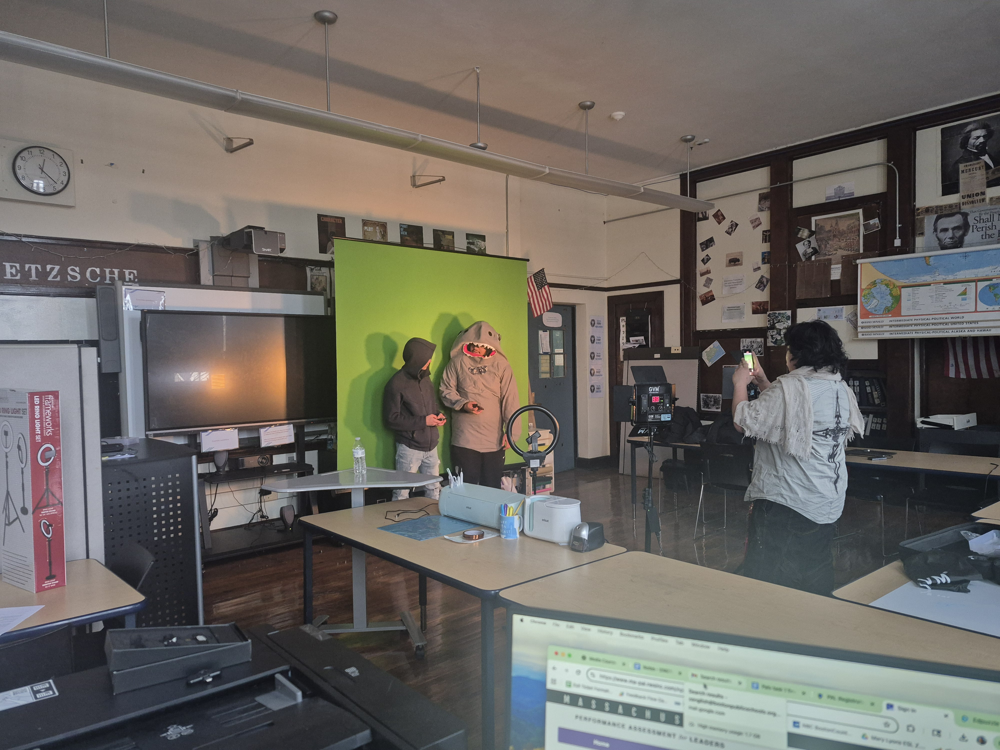
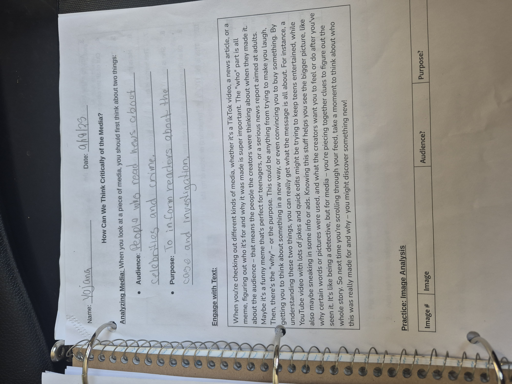
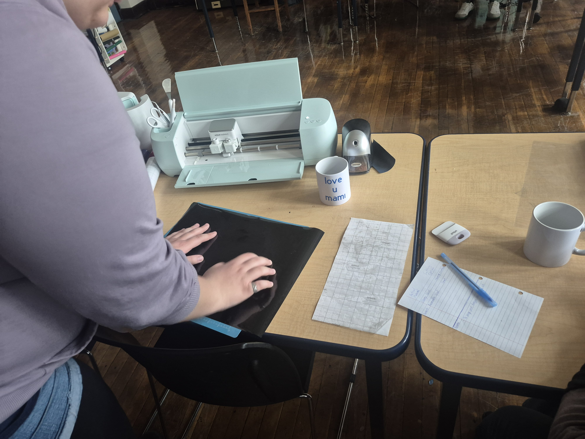
Broadcasting & Media Literacy — SY 2024–2025 · Mary Lyon Pilot High School
Digital Literacy & Computer Science · Grades 9–12
A Cross-Curricular Elective Built from Real Need
This course didn't emerge from a district curriculum map. It grew out of a gap: students at Mary Lyon K-8 were producing, consuming, and being shaped by media with no structured framework for understanding it. The response was a project-based, cross-curricular elective that pulled from Digital Literacy (MA DLCS), Media Literacy, U.S. and Civic History, ELA, ESL/ELD, and WIDA English Language Development standards — not because it was designed to hit every framework, but because real inquiry about media, truth, and power naturally crosses all of those lines.
The course ran as a co-taught elective available BPS-wide through Campus Without Walls, serving multilingual learners alongside native English speakers in a shared production environment. Content creation was the vehicle: students didn't analyze media in the abstract — they built a newsroom, recorded and published podcasts, shot and edited video, designed merchandise, and co-built digital tools. Student interest drove unit selection. The field trips were not add-ons; they were primary sources.
What follows is an honest standards crosswalk. This was a Media & Digital Literacy elective, not a Computer Science fundamentals course — so some DLCS strands are strong, some are partial, and some are named gaps that belong in the next phase.
Full crosswalk against MA DLCS Grades 9–12. This course runs on two strands: Computing & Society (CAS) and Digital Tools & Collaboration (DTC).
Standards not covered here are flagged for Phase 2 (BPS Digital Literacy scope expansion) and directly inform what the next iteration needs to build.
Computing & Society (CAS)
| Standard | Description | Coverage | How It Appeared |
|---|---|---|---|
| CAS.b.2 | Evaluate social, cultural, and political impacts of technology | Strong | The spine of the entire course. Units 1–3, 6, 7 all build toward this; field trips to the Kennedy Institute, JFK Library, Old South Meeting House, and Boston Tea Party Museum grounded it in primary-source history |
| CAS.c.3 | Analyze how media can be manipulated to affect beliefs and behaviors | Strong | Unit 1 (ad deconstruction, ethos/pathos/logos), Unit 2 (SIFT method, lateral reading, "One Story Two Realities" podcast), Unit 3 (propaganda across historical periods), Unit 6 (investigative journalism ethics) |
| CAS.a.2 | Safe practices when collaborating online | Partial | Unit 4 addressed digital wellness, consent waivers, and publishing responsibility. Online safety protocols were embedded in practice but not a standalone explicit unit |
| Cybersecurity & data protection | Passwords, authentication, data privacy, platform data collection | Not covered | How platforms collect and monetize user data, password hygiene, and authentication were not addressed — planned for Phase 2 |
| Algorithm & recommendation literacy | How algorithms curate feeds, filter content, and shape exposure | Not covered | Adjacent to Units 1–2 (media manipulation) but algorithmic systems were not explicitly taught — a significant gap given the course's media criticism focus |
| Copyright, IP & fair use | Intellectual property rights, Creative Commons, fair use in student media | Partial | Implied through podcast publishing, YouTube uploads, and consent/waiver process. Not explicitly taught as a standalone unit — students used royalty-free assets without formal IP instruction |
Digital Tools & Collaboration (DTC)
| Standard | Description | Coverage | How It Appeared |
|---|---|---|---|
| DTC.a.5 | Create an artifact that answers a research question and cites sources | Strong | Every major project: "One Story Two Realities" podcast (Unit 2), PSA campaigns (Unit 4), student newsroom segments (Unit 5), investigative journalism pieces (Unit 6), final media showcase (Unit 9) — all cited, all published |
| DTC.b.2 | Use digital tools to collaborate with others in different contexts | Strong | Newsroom role rotations (anchor, editor, researcher, social media manager); Podtrak P4 + Shure mic audio production; WeVideo and iMovie video editing; Canva and Google Workspace across all units; Berklee College partnership for sound/storytelling |
| DTC.a.3 | Evaluate digital tools for efficiency and effectiveness | Strong | Students chose tools by project need: Audacity vs. GarageBand for audio, WeVideo vs. iMovie for video, Podbean vs. Spotify for Creators for distribution. PolyCam cameras, green screen, and the Podtrak P4 required hardware evaluation before every shoot |
| DTC.b.3 | Manage and resolve conflicts in digital collaborations | Strong | The newsroom inaccuracy incident was the course's sharpest moment: students published wrong content, then had to correct it publicly. They became the source of the problem they spent months studying. Real stakes, real resolution |
| Coding / computational thinking | Programming concepts, iterative design, algorithmic logic | Partial | Word Quest (morphology game co-built with students on readflexes.com via vibe-coding) and the French Survival Guide website introduced iterative design and user-feedback loops. Not a standalone CS unit — a media-literacy entry point into building with AI |
| Accessibility in digital design | Designing for users with disabilities; alt text, captions, contrast standards | Not covered | Not addressed in this iteration — a meaningful gap given the course's publication of public-facing media |
| Computing fundamentals | Networks, hardware, operating systems, data storage | Not covered | Out of scope for a media literacy elective — addressed directly in the BPS Digital Literacy Phase 2 scope |
English Language Development · Embedded Throughout
All students in this course were multilingual learners (WIDA 3.0–4.2). ELD standards were embedded throughout, not taught as a separate strand.
| Standard | Description | Coverage | How It Appeared |
|---|---|---|---|
| ELD 1 | Social & Instructional Language | Strong | Academic discussion, newsroom role vocabulary, presentation skills across all units; sentence frames and bilingual vocabulary sheets (EN/ES, EN/PT) in every unit |
| ELD 2 | Language of Language Arts | Strong | Reading informational texts and media, writing podcast scripts, PSAs, and investigative pieces; genre-specific academic language throughout |
| ELD 5 | Language of Social Studies | Strong | Civic vocabulary, primary source analysis, propaganda and protest language in Units 3 and 6; Boston field trips grounded abstract concepts in place |
| ELD 4 | Language of Science | Not targeted | Outside the scope of this course |
| ELD 3 | Language of Mathematics | Not targeted | Outside the scope of this course |
Reading · Writing · Speaking · Civic Knowledge
| Standard | Area | Coverage | How It Appeared |
|---|---|---|---|
| RI.11-12.1 | Reading — cite strong textual evidence; distinguish what the text says vs. inferences | Strong | Every written and spoken project required source citation; SIFT method trained students to trace claims back to primary sources |
| RI.11-12.4 | Reading — determine meaning of words and phrases, including figurative/connotative; analyze word choice | Strong | Bilingual vocabulary sheets (EN/ES, EN/PT) in every unit; media literacy vocabulary (bias, propaganda, ethos, disinformation) built explicitly across Units 1–3 |
| RI.11-12.6 | Reading — point of view, rhetoric, purpose | Strong | Ad analysis, ethos/pathos/logos, bias chart work in Units 1–3; students identified rhetorical choices in historical and contemporary media |
| RI.11-12.7 | Reading — integrate multiple sources in diverse formats and media | Strong | Units 1, 2, and 6: comparing print, audio, and video coverage of the same events; SIFT method applied across formats |
| RI.11-12.8 | Reading — evaluate arguments, assess reasoning, detect fallacies | Strong | Fact-checking and source evaluation in Unit 2; propaganda analysis in Unit 3; newsroom ethics in Unit 6 |
| W.11-12.1 | Writing — argument with evidence and counterargument | Strong | PSA campaigns (Unit 4), opinion segments in the newsroom, bias analysis writing |
| W.11-12.2 | Writing — informative/explanatory texts | Strong | Podcast scripts, investigative pieces, digital portfolios — all required researched, cited explanatory writing |
| W.11-12.6 | Writing — use technology to produce, publish, and collaborate | Strong | Google Docs co-writing, WeVideo collaborative editing, Canva shared design — publishing workflows built into every project |
| W.11-12.7 | Writing — short and sustained research projects | Strong | Unit 2 (fact-checking a real news story), Unit 6 (investigative journalism project), Unit 7 (oral history research) |
| W.11-12.8 | Writing — gather relevant information from multiple sources; evaluate credibility | Strong | SIFT method was the explicit framework for this across Units 1, 2, and 6; students practiced lateral reading and source triangulation |
| SL.11-12.1 | Speaking & Listening — collaborative discussion; build on others' ideas | Strong | Newsroom role rotations required daily spoken collaboration; Socratic-style media analysis discussions ran throughout Units 1–4 |
| SL.11-12.3 | Speaking & Listening — evaluate a speaker's point of view, reasoning, and use of evidence | Strong | Students analyzed podcasts, news anchors, and speeches for credibility and rhetorical technique across Units 1, 2, and 5 |
| SL.11-12.4 / SL.11-12.5 | Speaking & Listening — present information, make strategic use of digital media | Strong | Podcast recording, news anchor scripts, green screen segments, digital portfolio presentations |
| L.11-12.6 | Language — acquire and use academic and domain-specific vocabulary | Strong | Explicit vocabulary instruction in every unit; media literacy terminology (bias, disinformation, ethos, algorithm, propaganda) assessed in projects; bilingual glossaries supported acquisition |
| W.11-12.5 | Writing — develop and strengthen writing through planning, revising, and editing | Partial | Podcast scripting included drafting and revision cycles; formal writing revision protocols were inconsistently applied given attendance and pacing pressures |
| HSS — Civic Knowledge | History & Social Science — civic participation, rights, public discourse | Strong | Unit 3 compared BLM and the Boston Tea Party as protest media; field trips to Old South Meeting House, Tea Party Museum, Kennedy Institute grounded civic concepts in place |
| HSS — Analyzing Primary Sources | History & Social Science — evaluating historical evidence | Strong | Propaganda posters, colonial pamphlets, news footage — students used historian methods to analyze sourcing, audience, and intent across Units 3 and 6 |
| HSS — Media's Role in History | History & Social Science — communication technology and society | Partial | Covered in Units 1–3 through the lens of protest and persuasion; broader media history arc was abbreviated due to time and attendance constraints |
International Society for Technology in Education
The ISTE Standards describe what students should know and do with technology. Several align directly with this course's project-based structure.
| Standard | Description | Coverage | How It Appeared |
|---|---|---|---|
| 1.2 Digital Citizen | Recognize rights, responsibilities, and opportunities in a digital world; act safely, legally, and ethically | Strong | Digital footprint, attribution, copyright, consent and waiver process, online safety — woven across all units; Unit 4 addressed it directly |
| 1.3 Knowledge Constructor | Curate information from digital resources; evaluate accuracy and perspective | Strong | SIFT method, lateral reading, source triangulation in Units 1, 2, and 6; students built knowledge bases for investigative and research projects |
| 1.6 Creative Communicator | Communicate clearly and express themselves creatively for a variety of purposes using platforms, tools, styles, and formats | Strong | Podcasts, PSAs, news segments, oral histories, digital portfolios — students chose formats and produced for real audiences across the year |
| 1.7 Global Collaborator | Use digital tools to broaden perspectives and work collaboratively with others | Strong | Newsroom role rotations, WeVideo co-editing, shared Google Workspace production — collaboration was built into the structure of every major project |
| 1.4 Innovative Designer | Use a design process to identify problems, develop solutions, build prototypes, and iterate | Partial | Building the media lab, Cricut/sublimation design projects, and studio setup involved iterative design thinking; formal design-process documentation was inconsistent |
| 1.1 Empowered Learner | Set goals, use technology to learn, seek feedback, and demonstrate competency | Partial | Students selected tools and directed their own projects in Units 5–9; structured goal-setting and self-assessment protocols were applied unevenly |
Student-Built Production Space · Gear & Tech Stack
The studio was built collaboratively with students. Before finalizing the setup, students and teacher visited Boston Green Academy to study their production space, then brought those ideas back to Mary Lyon. Every design decision became part of the curriculum.
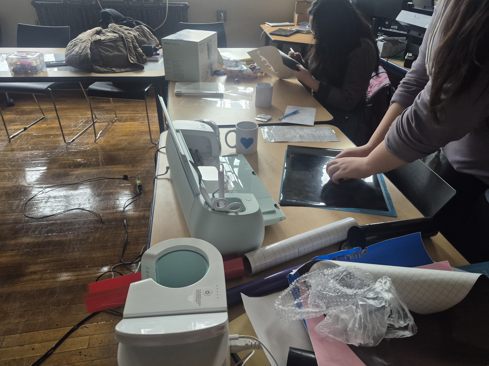
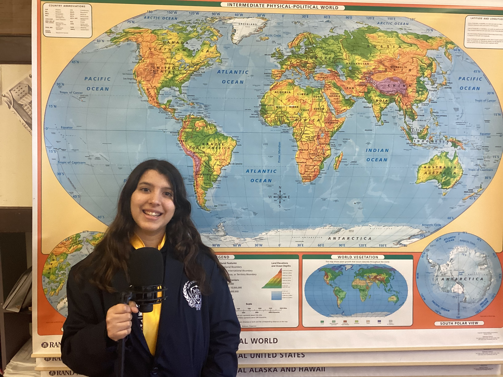
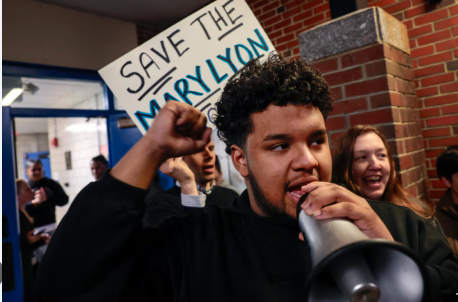


Community partnerships: Facing History & Ourselves · Dove Confident Me · NewsHour Classroom · NPR Student Podcast Challenge · Boston Revolutionary Sites · Berklee College of Music
Collaborative Game Lab · Student-Built Tools
From "Boring" to Engaging: Vibecoding Morphology with Students
The Problem: Morphology was a school QSP priority and a core literacy standard. But seniors found traditional ISME morphology lessons felt "for kids" and lacked engagement.
The Solution: We co-designed Word Quest for the Stolen Bunny — an interactive morphology adventure where students navigate different lands to learn prefixes, suffixes, Latin and Greek roots, and solve morphology challenges through mini-games.
The Build: It was vibecoding. We started with a framework, asked students for feedback on mechanics and difficulty, and iterated together.
The Mechanics: Students walk through Prefix Forest, Suffix Swamp, Root Ruins, and more — answering morphology questions, collecting "spell components," and competing in word-building races.
Student-Built Games: Word Quest inspired students to build their own morphology games. Some created flashcard challenges; others built racing games. These peer-designed tools became tools other students actually used to study.
Try Word Quest: readflexes.wordquest.com ↗
A live prototype of the morphology game, built collaboratively and refined through student feedback.
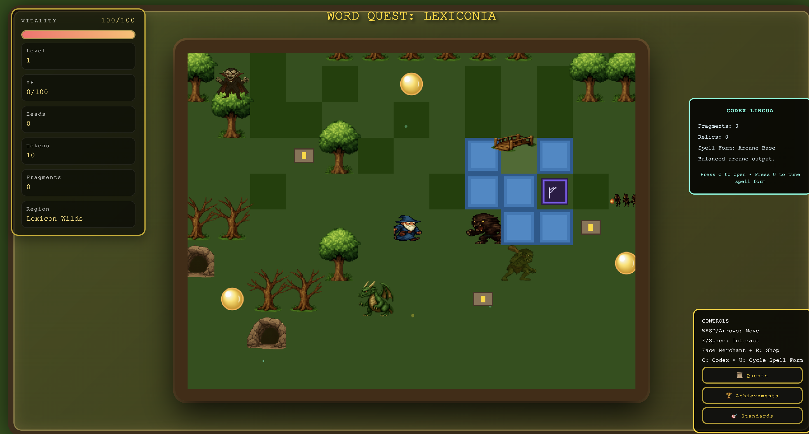


Why This Matters
- Responds to student voice: Instead of accepting "this is boring," we asked why and redesigned together.
- Makes morphology stick: Game-based repetition, spaced recall, and immediate feedback — all research-backed for vocabulary retention.
- Meets the QSP goal: Addresses the school's academic growth priority (morphology) in a way that actually engages multilingual learners.
- Peer-to-peer learning: Students who built games became teachers; students who played became game designers.
- Portable and replicable: Word Quest works standalone; the vibe-coding process can be applied to any grammar or vocabulary unit.
Social-Emotional Learning · Dove Confident Me
Unit 4 (Digital Health & Body Image) was built directly on the BPS Office of Health & Wellness curriculum and the Dove Confident Me program. SEL competencies ran across Unit 4 and Unit 8 (personal narrative). The Facing History & Ourselves partnership also contributed an SEL lens throughout Units 1 and 3.
| Framework / Standard | Description | Coverage | How It Appeared |
|---|---|---|---|
| CASEL — Self-Awareness | Identify emotions, values, and how they shape behavior; recognize strengths and limitations | Strong | Unit 4 (body image, identity, and media influence) and Unit 8 (personal narrative audio memoir) both asked students to examine their own relationship to media and self-image |
| CASEL — Social Awareness | Take the perspective of others; recognize broader social/cultural context; show empathy | Strong | Facing History partnership (Units 1 and 3), BLM vs. Tea Party comparison, oral history interviews (Unit 7) — the course consistently asked students to consider whose voice is centered and whose is absent |
| CASEL — Responsible Decision-Making | Make constructive, ethical choices about personal behavior and interactions | Strong | Publishing consent and waiver process, newsroom accuracy failure and its fallout, social media and mental health discussion in Unit 4 — students made real decisions with real stakes |
| CASEL — Self-Management | Manage emotions and behaviors; set and work toward goals; handle stress | Partial | Screen time, digital boundaries, and stress around social media in Unit 4; informal self-management skills came up throughout the year but were not a formal learning objective |
| BPS Health — Digital Wellness | Understand the relationship between technology use and mental/emotional health | Strong | Unit 4 used BPS Office of Health & Wellness curriculum directly; students examined screen time, body image in media, social comparison, and digital boundaries |
| Dove Confident Me | Body image, appearance ideals, media influence on self-esteem | Strong | Partner curriculum integrated into Unit 4; students analyzed advertising, airbrushing, and appearance-based messaging with structured reflection activities |
Outcomes · Artifacts · Teaching Moments
Mary Lyon Pilot High School was designated for closure during the year this course ran. Many of the students most invested in the media studio transferred out as the closure process unfolded. Despite the disruption, Broadcasting & Media Literacy was the most popular elective in the building: nearly every senior enrolled, with the only exception being students committed to Early College coursework at RCC.
When students launched the Mary Lyon student newsroom, the content they produced was inaccurate. In a year defined by national debate over misinformation, that became the course's most significant teaching moment. Students had to reckon with the fact that they had become the source of the problem they spent months studying. That moment is the course in one story.
MLL design was built into the course from day one. Every unit included bilingual vocabulary sheets (English/Spanish, English/Portuguese), sentence frames, visual rubrics, and co-teaching structures. A full co-teaching alignment guide mapping every unit to DESE MLL Look-Fors was developed alongside the curriculum.
Gap Analysis · Phase 2 & 3 Vision
Add computing fundamentals: file systems, hardware basics, navigating platforms, data literacy basics. The RCC data makes the case for why this matters for multilingual learners specifically.
Integrate AI as a lens throughout: how algorithms shape what we see, how AI generates content, how to evaluate AI-produced media critically. Not a separate unit. Woven in.
A complete, replicable BPS Digital Literacy curriculum for multilingual learner populations: documented outcomes, student artifacts, co-teaching model, and standards coverage across all DLCS strands.
DL-14-FRANCE.DAT · Student Digital Guide · Paris & London
As part of the senior year experience, led a group of Mary Lyon students on a trip to France. Built a digital student guide — a website where students could review everything they needed before and during the trip: French language essentials, packing checklists, cultural norms, daily itinerary, and behavior expectations. One reference students could open on their phones in Paris.
The guide drew directly from the trip's slide decks and planning documents, condensed into a format students would actually use. French language review was built in so students could practice key phrases before departure. For many students, this was their first international travel and first time navigating a country where English wasn't the default.
Rather than printing packets students might lose before boarding, the guide lived online: accessible from any phone, searchable, updatable if plans changed. Building it gave students a concrete example of digital literacy in practice — taking source material (slide decks, packing lists, behavior expectations) and restructuring it for a specific audience, format, and context.
DL-16-IMGS.DAT · Studio, Newsroom & Student Work
Course in Photos
Documentation from the Media Studio, ML Newsroom, and student production sessions throughout SY 2024–2025.
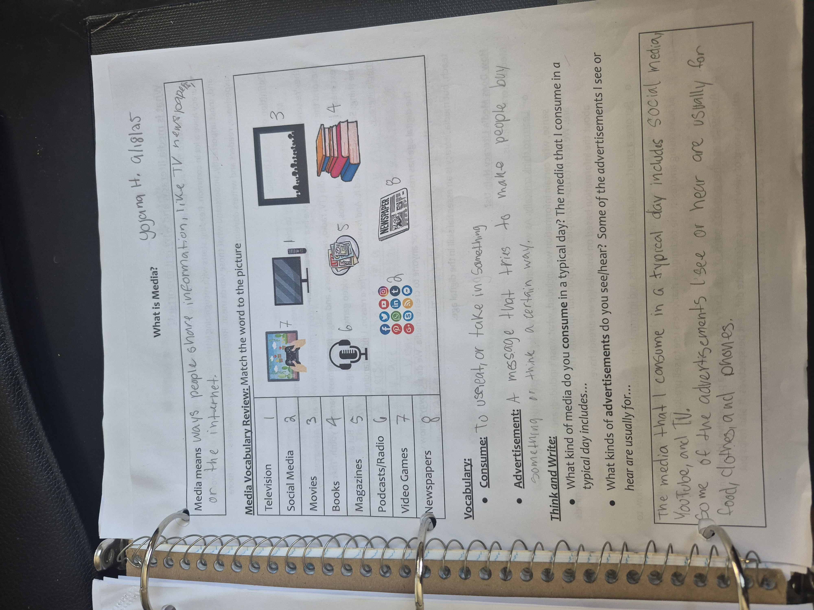
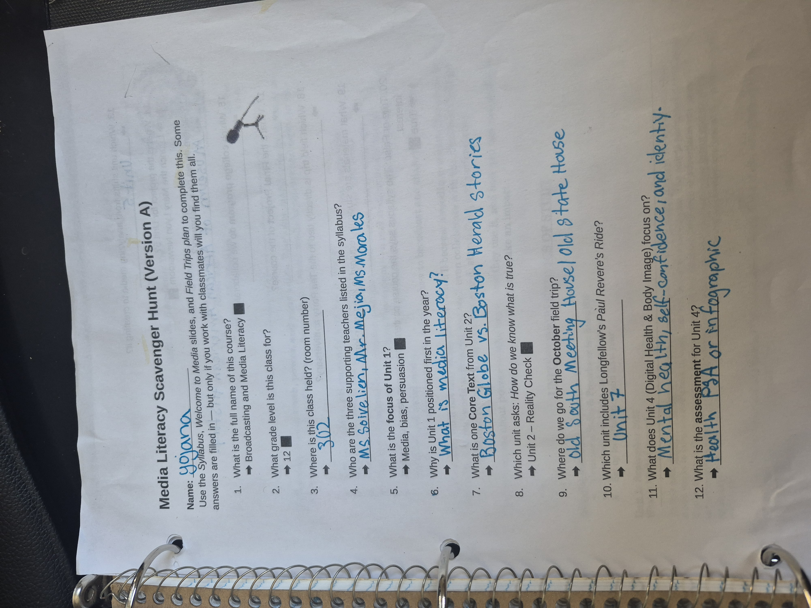
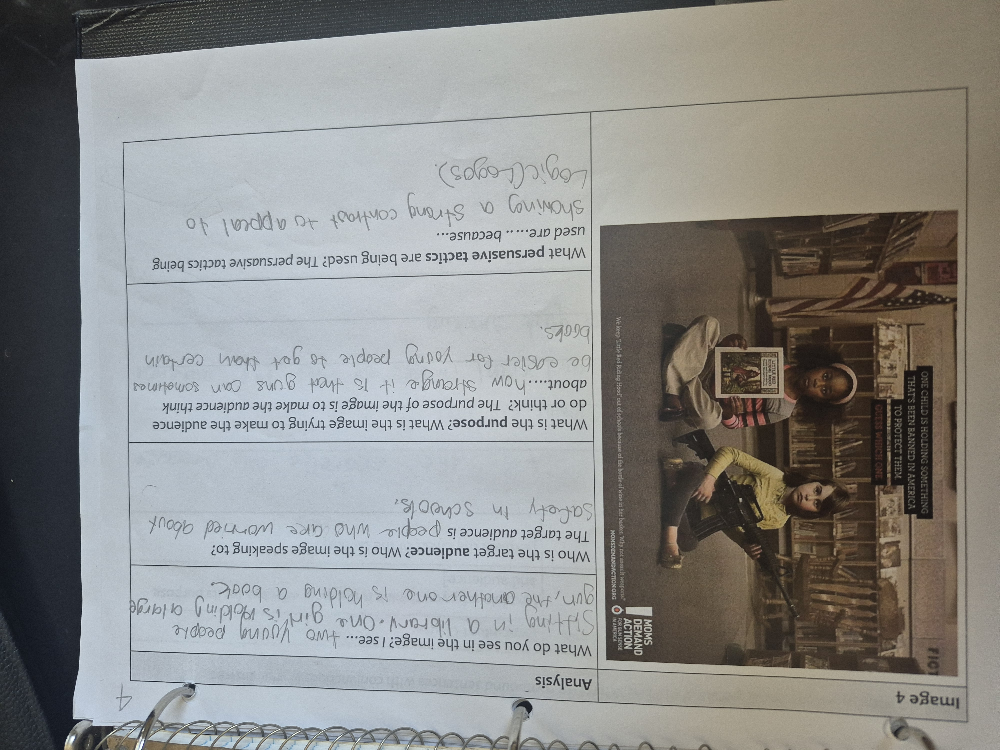
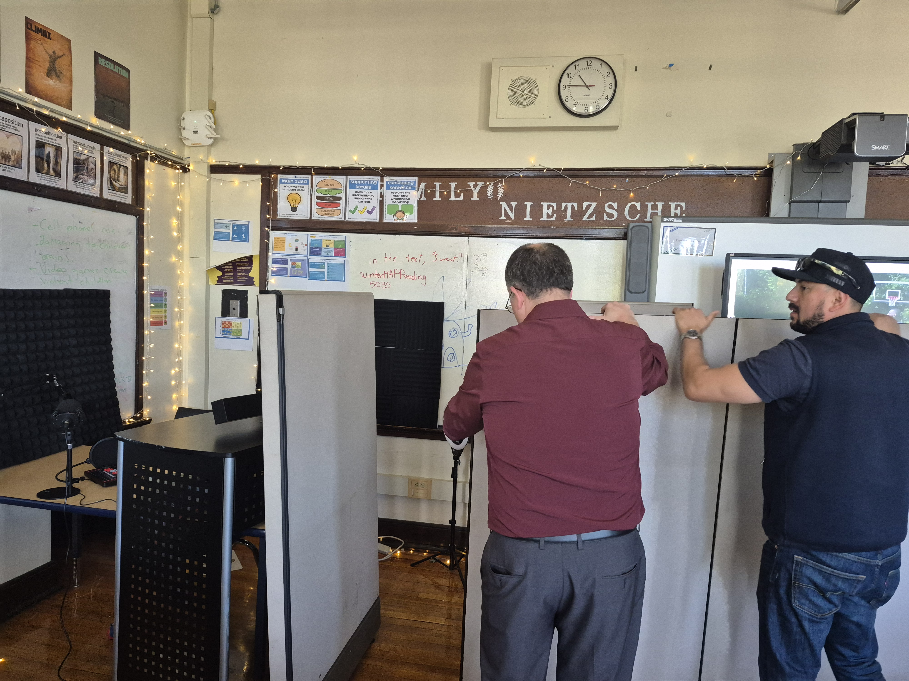